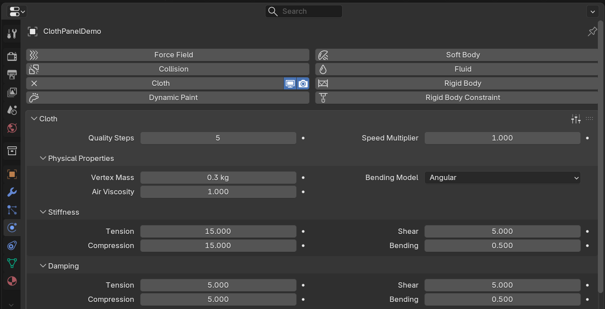
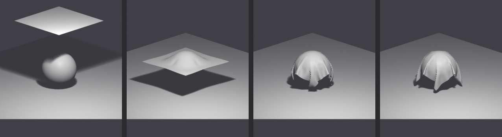
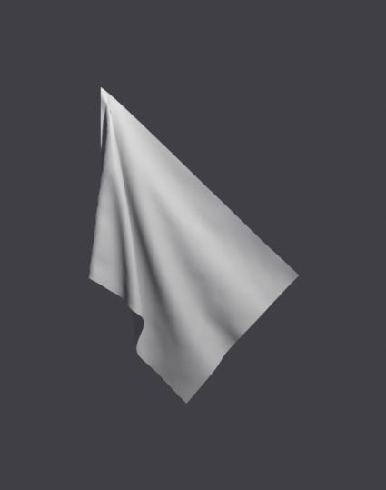
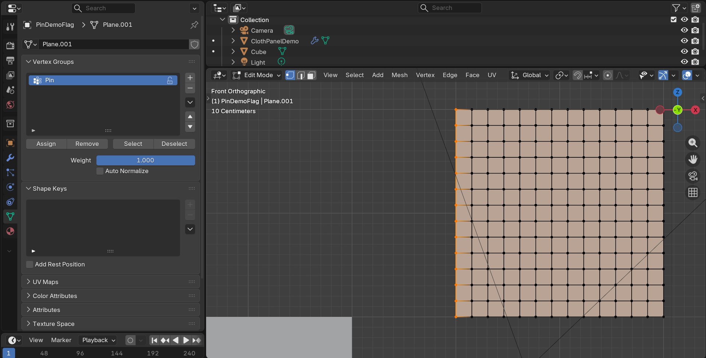
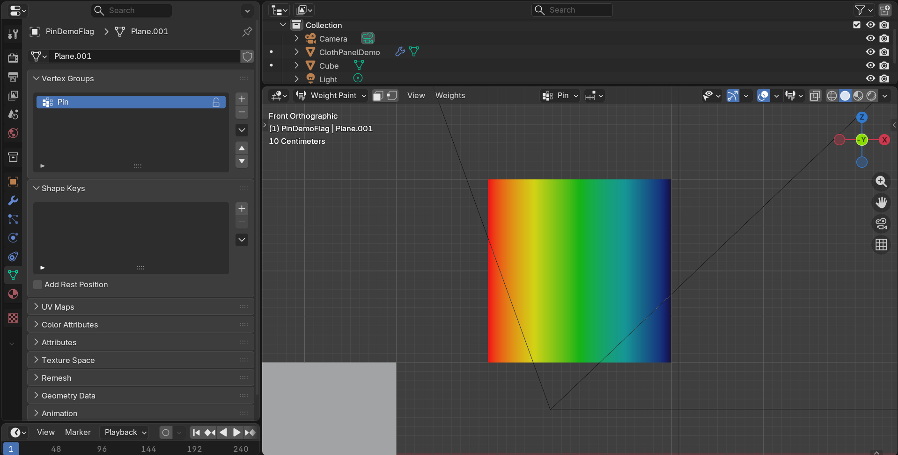
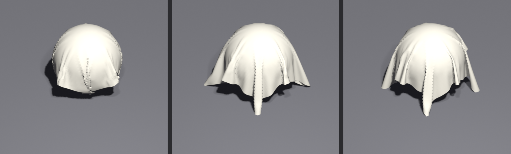
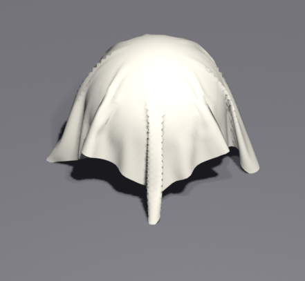

🧵 Lesson 34: Cloth Simulation
Ever wondered how movie characters have clothing that moves so realistically? Or how flags wave convincingly in the wind? Welcome to the magical world of cloth simulation! In this lesson, you'll learn how to make fabric behave like real cloth—draping naturally over objects, developing authentic wrinkles and folds, and responding dynamically to movement and forces. Whether you're creating character clothing, interior design elements, or dynamic props, cloth simulation will bring a level of realism that's impossible to achieve through manual modeling alone.
🎯 What You'll Learn
- Cloth Physics Fundamentals: Understand how Blender simulates fabric behavior
- Setting Up Cloth Simulations: Configure cloth modifiers and collision objects
- Fine-Tuning Fabric Properties: Control stiffness, weight, damping, and more
- Pinning and Constraints: Control which parts of cloth move and which stay fixed
- Collision and Self-Collision: Make cloth interact realistically with objects and itself
- Cache Management: Bake and optimize your simulations for best results
- Common Cloth Effects: Create draping tablecloths, hanging curtains, waving flags, and character clothing
- Troubleshooting Techniques: Fix common simulation problems and artifacts
⏱️ Estimated Time: 90-120 minutes
🎯 Project: Create a realistic draped tablecloth scene with dynamic cloth behavior
In This Lesson
🌊 Understanding Cloth Physics
Before we dive into the technical settings, let's understand what makes cloth behave the way it does. Think about your favorite shirt or a bedsheet—fabric isn't rigid like wood or metal. It's flexible, responds to gravity, can fold and wrinkle, and interacts with itself and other objects in complex ways.
Real-World Fabric Behavior
When you drape a tablecloth over a table, several physical forces are at play:
- Gravity pulls the fabric downward
- Tension in the fabric resists being stretched
- Bending resistance creates natural folds and wrinkles
- Friction with surfaces affects how cloth slides or stays in place
- Air resistance can slow down movement (think of a flag in the breeze)
- Internal forces prevent the fabric from passing through itself
💡 The Cloth Simulation Metaphor
Think of Blender's cloth simulation as a virtual tailor's mannequin. Just as a fashion designer drapes real fabric over a mannequin to see how it falls and fits, Blender calculates how your digital fabric should behave frame by frame. The simulation engine is like having physics knowledge built right into your software—it knows how fabric stretches, wrinkles, and collides, so you don't have to manually animate every fold!
How Blender Simulates Cloth
Blender's cloth simulation works by treating your mesh as a network of interconnected springs. Imagine each vertex (point) on your mesh is connected to its neighbors by tiny invisible springs. These springs can:
- Stretch and compress: Like the fabric being pulled or relaxed
- Resist bending: Creating stiffness that causes wrinkles rather than smooth curves
- Transfer forces: When you pull one corner, the whole cloth responds
Every frame of your animation, Blender calculates all these spring forces, adds gravity, checks for collisions, and moves each vertex to its new position. This happens dozens or hundreds of times per second to create smooth, realistic motion.
🎬 Simulation vs. Manual Animation
| Aspect | Manual Animation | Cloth Simulation |
|---|---|---|
| Time Required | Hours or days for complex movement | Minutes to set up, automatic calculation |
| Realism | Depends entirely on animator skill | Physically accurate by default |
| Flexibility | Total artistic control | Physics-based with artistic adjustments |
| Best For | Stylized, specific artistic movements | Realistic fabric behavior |
Types of Cloth Effects You Can Create
Cloth simulation isn't just for clothing! Here are some common uses:
💭 Think About It: Real fabric comes in countless varieties—silk drapes differently than denim, cotton behaves differently than leather. Blender's cloth simulation allows you to mimic all these different materials by adjusting various properties. A superhero's cape needs different settings than a character's t-shirt!
⚠️ Important Concept: Simulation Time vs. Real Time
When you run a cloth simulation, it doesn't happen instantly. Blender needs to calculate physics for each frame. A 5-second animation at 24 frames per second means 120 individual physics calculations. Depending on your mesh complexity and settings, this could take seconds, minutes, or even longer. That's why we "bake" simulations—pre-calculating and storing the results so playback is smooth.
🚀 Your First Cloth Simulation
Let's dive right in and create your first cloth simulation! We'll start with the classic example—dropping a cloth onto a surface. This simple setup will teach you the fundamental workflow that applies to all cloth simulations.
Setting Up the Scene
We need two things for a basic cloth simulation: the cloth object itself, and something for it to collide with (otherwise it'll just fall through empty space forever!).
✅ Quick Start Setup
- Delete the default cube (select it and press X, confirm deletion)
- Add a plane for the cloth:
- Shift + A → Mesh → Plane
- Scale it up: Press S, then 2, then Enter (makes it 2x larger)
- Move it up: Press G, then Z, then 3, then Enter (3 units above origin)
- Add geometry to the plane (cloth needs subdivisions to bend):
- With plane selected, right-click → Subdivide
- In the bottom-left corner, click "Subdivide" to open options
- Set "Number of Cuts" to 20 (more geometry = more realistic draping)
- Add a ground plane to catch the cloth:
- Shift + A → Mesh → Plane
- Scale it: S, 5, Enter (make it much larger)
- It should be at ground level (Z = 0)
Now you have a subdivided plane floating above a ground plane. Think of it like holding a bedsheet above your bed—you're about to let it drop!
Adding the Cloth Modifier
This is where the magic happens. The Cloth modifier tells Blender, "Hey, treat this object like fabric, not like a solid object."
🎯 Adding Cloth Physics
- Select your upper plane (the one you subdivided)
- Go to the Physics Properties tab:
- Look for the icon that looks like a bouncing ball (right side panel)
- It's the one with a sphere and motion lines
- Click "Cloth" button at the top
- That's it! You've just made your first cloth object

You'll notice a bunch of settings appear. Don't worry about those yet—the defaults are actually pretty good for a basic simulation!
Adding Collision to the Ground
Now we need to tell Blender that the ground plane is solid and the cloth should bounce off it, not pass through it. This is like saying, "Yes, this is a real surface, not a ghost surface."
🛡️ Setting Up Collision
- Select the ground plane (the larger one at the bottom)
- Go to Physics Properties (same tab as before)
- Click "Collision" button
- Done! The ground is now a solid surface for cloth
💡 Understanding the Setup
Think of it this way: Cloth physics says "I am fabric and I want to behave like fabric." Collision physics says "I am a solid object and things should bounce off me." You need both for cloth to interact with surfaces. Without collision on the ground, your beautiful cloth would just fall forever through an invisible floor!
Running Your First Simulation
This is the moment of truth! Let's see your cloth fall and drape over the ground.
✅ Playing the Simulation
- Make sure you're at frame 1:
- Look at the timeline at the bottom
- The current frame indicator (blue line) should be at 1
- If not, press Shift + Left Arrow to jump to frame 1
- Press Spacebar to play the animation
- Watch your cloth fall!
- It should drop down under gravity
- Hit the ground and deform
- Settle into a natural draped shape
- Press Spacebar again to stop playback
Congratulations! You just created your first cloth simulation! Even this simple setup demonstrates the power of physics simulation—look at how naturally the cloth draped itself, creating realistic folds and wrinkles that would take hours to model by hand.
🎯 What You're Seeing: As the simulation plays, Blender calculates gravity pulling the cloth down, the cloth's internal resistance to stretching, and the collision with the ground. Each wrinkle and fold is the result of real physics calculations. Notice how some areas bunch up while others stretch—that's authentic fabric behavior!
Exploring the Results
After your simulation has run, try these things to understand what happened:
- Scrub through time: Click and drag in the timeline to move backward and forward through the simulation
- Change viewing angle: Middle-mouse drag to orbit around your scene and see the cloth from different angles
- Watch it again: Jump back to frame 1 (Shift + Left Arrow) and play again
- Check the mesh: Select the cloth and look at how the subdivided geometry deformed
⚠️ First-Time Simulation Notes
- Slow playback is normal: Cloth simulation is calculation-heavy. Your first playback might be slow or choppy—that's Blender calculating physics in real-time. We'll learn to "bake" the simulation later for smooth playback.
- It calculates once: After the first playback, Blender caches (remembers) the results. Second playback should be smoother!
- Changes reset the simulation: If you modify the cloth object or settings, Blender will recalculate from scratch next time you play.
Understanding What Just Happened
Let's break down the simulation you just witnessed:

🔍 Frame-by-Frame Physics
| Phase | What's Happening | Physics Forces |
|---|---|---|
| Initial Fall | Cloth drops from starting position | Gravity, air resistance |
| Impact | Cloth hits ground and bounces slightly | Collision force, elasticity |
| Spreading | Cloth spreads outward from impact point | Momentum transfer, internal tension |
| Settling | Small movements as cloth finds rest state | Damping, friction, residual forces |
| Rest | Cloth completely still in final shape | All forces balanced |
Modifying Your First Simulation
Now that you've seen a basic simulation work, let's experiment! Small changes can create dramatically different results.
🧪 Try These Experiments
Experiment 1: Change Starting Height
- Select the cloth plane
- Go back to frame 1 (Shift + Left Arrow)
- Press G, then Z, then 5 (move it higher)
- Play the simulation again
- Notice: The cloth has more time to accelerate and hits harder!
Experiment 2: Add More Subdivisions
- Select the cloth plane
- Tab into Edit Mode
- Select all (A)
- Right-click → Subdivide
- Set subdivisions to 30 or 40 in the corner panel
- Tab back to Object Mode
- Play the simulation
- Notice: More wrinkles and finer details! But slower calculation.
Experiment 3: Tilt the Ground
- Select the ground plane
- Go to frame 1
- Press R (rotate), then Y (around Y axis), then 15 (degrees)
- Play the simulation
- Notice: The cloth slides down the slope!
💭 Learning Through Experimentation: The best way to understand cloth simulation is to play with it! Don't worry about breaking anything—you can always undo (Ctrl + Z) or restart from frame 1. Every weird result teaches you something about how the physics work.
💡 Pro Tip: The Geometry Matters
The number of faces in your mesh directly affects simulation quality and speed. Think of it like resolution in an image—more "pixels" (faces) means more detail but slower processing. For testing, use lower subdivision (10-15). For final renders, increase to 30-50 or more. We'll cover optimization strategies later in the lesson!
🎛️ Cloth Properties Explained
Now that you've created your first simulation, it's time to understand all those settings you saw in the Physics Properties panel. These properties control everything about how your fabric behaves—from whether it acts like silk or denim, to how it responds to wind and gravity.
Think of cloth properties as the "recipe" for your fabric. Just as different recipes create different cakes, different property combinations create different types of cloth behavior.
The Physics Properties Panel Overview
When you select a cloth object, the Physics Properties tab shows several collapsible sections. Let's explore each one and understand what it controls.
Physical Properties: The Foundation
These are the core settings that define your cloth's basic behavior. You'll find these right at the top of the cloth settings panel.
🏋️ Mass and Weight
Mass (default: 0.3 kg): How heavy your fabric is per square meter. This is like comparing a t-shirt to a heavy winter coat.
- Low values (0.1-0.2): Light, floaty fabrics like silk, chiffon, or thin cotton
- Medium values (0.3-0.5): Normal clothing weight—denim, canvas, regular cotton
- High values (0.6-1.0+): Heavy materials like leather, thick wool, or canvas tarps
Real-World Comparison: A silk scarf weighs about 0.05 kg per square meter, while a leather jacket might be 0.8 kg per square meter. Heavier cloth falls faster, drapes tighter, and creates deeper folds.
💨 Air Viscosity
Air Viscosity (default: 1.0): How much air resistance affects your cloth. Think of this as the "thickness" of the air around your fabric.
- Value of 0: No air resistance—like cloth in a vacuum
- Value of 1: Normal air—realistic for most situations
- High values (5-20): Underwater effect or slow-motion aesthetic
🎬 Creative Use: Increase air viscosity to create dreamy, slow-motion cloth effects for fantasy scenes. Decrease it for fast, snappy cloth movement in action sequences.
Stiffness Settings: How Rigid Is Your Fabric?
Stiffness controls how much your cloth resists bending and stretching. This is where you really define whether your material feels like silk or cardboard!
📏 The Three Types of Stiffness
1. Tension Stiffness (default: 15):
Controls resistance to stretching. How much does the fabric want to maintain its original size?
- Low (5-10): Stretchy fabrics like spandex, elastic materials
- Medium (15-30): Normal cloth—cotton shirts, regular fabrics
- High (40-80): Non-stretch materials like canvas, stiff cotton
2. Compression Stiffness (default: 15):
Resistance to being squeezed or compressed. Usually kept similar to tension.
- Generally, set this to the same value as Tension Stiffness
- Lower values allow cloth to bunch up more easily
- Higher values keep cloth from compressing into tight folds
3. Shear Stiffness (default: 5):
Resistance to diagonal stretching—like pulling opposite corners of a sheet.
- Low (1-5): Fabric can twist and warp easily—good for organic draping
- Medium (5-10): Normal fabric behavior
- High (15-30): Stiff, maintains its shape even when twisted
4. Bending Stiffness (default: 0.5):
How much the cloth resists folding. This creates wrinkles and creases!
- Very Low (0.1-0.5): Soft, drapey fabrics with lots of small wrinkles—silk, thin cotton
- Medium (1-5): Regular cloth—normal wrinkle formation
- High (10-50): Stiff materials that create large, angular folds—leather, thick canvas
💡 Understanding Stiffness Through Example
Imagine three different fabrics:
- Silk Scarf: Tension 5, Compression 5, Shear 2, Bending 0.1 → Flows easily, many small wrinkles
- Cotton T-Shirt: Tension 15, Compression 15, Shear 5, Bending 0.5 → Normal draping, moderate wrinkles
- Leather Jacket: Tension 40, Compression 40, Shear 20, Bending 25 → Stiff movement, large creases
Damping: Controlling Cloth Motion
Damping controls how quickly cloth stops moving. Think of it as friction in the fabric itself—how much energy is lost with each movement.
🛑 Damping Settings
Tension Damping (default: 5):
- How quickly stretching motion stops
- Low (0-3): Bouncy, elastic behavior—cloth oscillates
- Medium (5-10): Natural settling—realistic for most fabrics
- High (15-25): Quick stop—no bouncing, immediate stillness
Compression Damping (default: 5):
- How quickly bunching motion stops
- Usually kept the same as Tension Damping
Shear Damping (default: 5):
- How quickly twisting motion stops
- Controls how long fabric continues to twist after being disturbed
Bending Damping (default: 0.5):
- How quickly folding motion stops
- Higher values make wrinkles form and settle faster
🎯 Practical Tip: If your cloth is bouncing or oscillating too much (looking "jiggly"), increase damping. If it's settling too quickly and looks lifeless, decrease damping. Start with small adjustments—damping values have a big impact!
Internal Springs: Advanced Control
Internal springs add extra structural support to your cloth. Think of them as invisible scaffolding that helps maintain the fabric's shape.
🔧 Internal Spring Settings
Tension (default: 15): Additional resistance to stretching
- Prevents unrealistic stretching in large cloth pieces
- Increase this if your cloth is stretching too much
Compression (default: 15): Additional resistance to compression
- Prevents cloth from bunching up too much
- Useful for maintaining fabric volume
Max Spring Creation Length:
- Controls how far apart vertices can be and still have internal springs
- Higher values create more springs = more stable but slower simulation
- Default of 0 means springs only between immediate neighbors
⚠️ When to Use Internal Springs
Internal springs are most useful when:
- Your cloth has very fine geometry and is stretching unrealistically
- You need extra stability for fast-moving cloth simulations
- Your fabric is tearing or exploding (yes, that happens!)
For most simulations, the default internal spring settings work well. Only adjust if you're seeing problems!
Common Fabric Presets
Here are some proven settings for common fabric types. Use these as starting points and adjust to taste!
🧵 Fabric Property Quick Reference
| Fabric Type | Mass | Tension | Bending | Damping |
|---|---|---|---|---|
| Silk/Chiffon | 0.1-0.15 | 5-8 | 0.1-0.2 | 3-5 |
| Cotton T-Shirt | 0.2-0.3 | 12-18 | 0.5-1.0 | 5-8 |
| Denim | 0.4-0.6 | 25-35 | 2-5 | 8-12 |
| Canvas/Tarp | 0.5-0.8 | 30-50 | 5-15 | 10-15 |
| Leather | 0.7-1.0 | 40-80 | 15-30 | 15-20 |
| Rubber/Elastic | 0.3-0.5 | 3-8 | 0.2-0.5 | 2-5 |
✅ Testing Your Settings
Here's a quick workflow for finding the right properties:
- Start with a preset from the table above that's close to what you want
- Run a quick test (low subdivision, short animation)
- Adjust one property at a time and see the effect
- Common adjustments:
- Too stretchy? → Increase Tension Stiffness
- Too stiff? → Decrease Bending Stiffness
- Too bouncy? → Increase Damping
- Falls too fast? → Decrease Mass or increase Air Viscosity
- Once close, increase subdivision and run full simulation
💭 The Iteration Process: Finding perfect cloth settings is rarely a one-shot deal. Professional artists often run 5-10 test simulations, tweaking values each time, before getting the exact behavior they want. Don't get frustrated—this is normal! Each test teaches you more about how the properties interact.
📌 Pinning and Vertex Groups
What if you want some parts of your cloth to stay in place while other parts move freely? That's where pinning comes in! Think about a curtain—the top edge is attached to a rod (pinned), but the rest hangs freely. Or a tablecloth where you want the center to stay on the table while the edges drape over. Pinning gives you precise control over which parts of your cloth are affected by physics.
Understanding Pinning
Pinning is like using invisible thumbtacks to hold specific parts of your cloth in place. The pinned vertices ignore physics and stay exactly where you put them, while unpinned vertices are fully affected by gravity, collisions, and all other forces.
💡 Real-World Pinning Examples
- Curtains: Pin the top edge where the rod holds them, let the rest drape
- Superhero Cape: Pin the shoulder attachment points, let the cape flow behind
- Flag: Pin one edge to the pole, let the rest wave in the wind
- Tablecloth: Pin the center or corners, let the edges hang
- Character Clothing: Pin the waistband, collar, or sleeves to a character's body
Creating Your First Pinned Cloth
Let's create a simple example: a flag waving in the wind. We'll pin one edge to act as the pole attachment, and let the rest move freely.
✅ Making a Waving Flag
Step 1: Create the Flag Mesh
- Add a new plane (Shift + A → Mesh → Plane)
- Scale it to flag proportions: S, X, 2, Enter (twice as wide)
- Rotate it vertically: R, Y, 90, Enter
- Move it up: G, Z, 2, Enter
- Subdivide heavily: Tab (Edit Mode), A (select all), Right-click → Subdivide
- In the corner panel, set "Number of Cuts" to 30
Step 2: Create a Vertex Group for Pinning
- Still in Edit Mode, deselect all (Alt + A)
- Enable X-Ray mode (Alt + Z) to see through the mesh
- Select the leftmost edge vertices:
- Click on one vertex on the left edge
- Hold Shift and click others to add to selection
- Or use Box Select (B) to select the entire left edge
- Look for the Object Data Properties tab (green triangle icon)
- Find the Vertex Groups section
- Click the + (plus) button to create a new group
- Double-click "Group" and rename it to "Pin"
- With vertices still selected, click "Assign" button
- The weight should be 1.0 (fully assigned)
Step 3: Enable Cloth with Pinning
- Tab back to Object Mode
- Go to Physics Properties (bouncing ball icon)
- Add Cloth physics
- Scroll down to find "Shape" section
- Enable "Pin Group" checkbox
- In the dropdown next to it, select your "Pin" vertex group
Step 4: Add Wind Force
- Shift + A → Force Field → Wind
- Position it to blow on your flag (move it to the side)
- Rotate it to point at the flag: R, Z, 90, Enter
- In the Physics Properties (with wind selected), set Strength to 5-10
Step 5: Run the Simulation
- Make sure you're at frame 1
- Press Spacebar to play
- Watch your flag wave in the wind! 🚩
Notice how the left edge stays perfectly in place (pinned) while the rest of the flag flutters and waves! This is the power of pinning—you get to choose exactly what moves and what doesn't.


Understanding Vertex Groups
Vertex groups are one of Blender's most powerful features. They're simply named collections of vertices with assigned weights (influence values from 0 to 1).
🎯 Vertex Group Weights
| Weight Value | Effect on Pinning | Use Case |
|---|---|---|
| 0.0 | No pinning - fully simulated | Areas that should move freely |
| 0.25 | Mostly free, slight restraint | Gentle constraint, allows some movement |
| 0.5 | Half pinned, half free | Transition zones between pinned/free |
| 0.75 | Mostly pinned, slight give | Nearly fixed with tiny flex |
| 1.0 | Completely pinned - no movement | Attachment points, fixed edges |
Advanced Pinning: Gradual Transitions
You don't have to use only full pinning (weight 1.0) or no pinning (weight 0.0). Creating gradual transitions with different weights can create more organic, realistic behavior.
💡 Gradient Pinning Example: Curtain
For a realistic curtain:
- Top edge: Weight 1.0 (fully pinned to curtain rod)
- One row below: Weight 0.7 (mostly pinned, slight movement)
- Two rows below: Weight 0.4 (transition zone)
- Rest of curtain: Weight 0.0 (fully simulated)
This creates a smooth transition from "pinned" to "free" rather than a sharp boundary, which looks much more natural!
Weight Painting for Pinning
For complex pinning patterns, Weight Paint mode is your friend. It lets you "paint" vertex weights directly onto your mesh, with visual feedback showing the influence.
🎨 Using Weight Paint Mode
- Create your vertex group first (even if empty)
- Enter Weight Paint mode:
- Select your cloth object
- Change mode dropdown at top-left from "Object Mode" to "Weight Paint"
- Your mesh will show a color gradient (blue = 0, red = 1)
- Select your pin group in the Object Data Properties
- Set your brush weight:
- Look at the top toolbar
- Find "Weight" slider (0.0 to 1.0)
- Set to 1.0 for full pinning
- Paint where you want pinning:
- Left-click and drag to paint
- Areas will turn red as you paint (showing weight 1.0)
- Adjust brush size with F key
- Create gradients:
- Lower the weight to 0.5 and paint transition areas
- Use Blur brush (Shift + B) to smooth weight transitions
- Return to Object Mode when done

Common Pinning Patterns
📋 Pin Group Templates
1. Hanging Cloth (Curtains, Banners)
- Pin top edge at weight 1.0
- Optional: Gradient from top (1.0) fading down (0.7 → 0.5 → 0.3)
- Rest at 0.0
2. Flag on Pole
- Pin left edge at 1.0 (pole side)
- Everything else at 0.0
3. Tablecloth
- Pin center area at 0.5-0.7 (stays on table surface)
- Fade to 0.0 toward edges (allows draping)
4. Character Cape
- Pin shoulder attachment points at 1.0
- Optional collar area at 0.5-0.7
- Rest at 0.0
5. Cloth on Character Body
- Pin waistband/belt line at 0.8-1.0
- Pin shoulders/collar at 0.7-0.9
- Sleeve cuffs at 0.6-0.8
- Free-hanging parts at 0.0
🎯 Professional Tip: When pinning cloth to animated characters, you often need to keyframe the pin group! As the character moves, you may want to adjust which vertices are pinned or their weight values. For example, a cape might be fully pinned when the character is still, but only partially pinned during dramatic movements to allow it to flow.
Stiffness Override with Vertex Groups
Vertex groups aren't just for pinning! You can also use them to vary stiffness across your cloth. This is incredibly useful for creating realistic materials with varying properties.
💡 Variable Stiffness Examples
- Reinforced Areas: Make collar and cuffs stiffer than the shirt body
- Seams and Hems: Add more stiffness where fabric is doubled or sewn
- Worn Areas: Lower stiffness in areas that are more flexible from wear
- Mixed Materials: Different stiffness for leather patches on denim
To use vertex groups for stiffness:
- Create a vertex group and assign weights
- In Cloth settings, expand "Stiffness Scaling"
- Choose your vertex group from the dropdown
- Adjust "Max" value to set the stiffness multiplier
⚠️ Common Pinning Mistakes
- Forgetting to assign vertices: Creating a group but not assigning any vertices to it!
- Wrong weight values: Using weight 0.0 when you meant 1.0
- Not selecting the pin group: Creating the group but forgetting to enable it in cloth settings
- Pinning too much: Over-pinning makes cloth look stiff and unrealistic
- Sharp transitions: Going from weight 1.0 to 0.0 immediately creates unnatural lines
💥 Collision Settings
Now that you understand how to make cloth and control which parts move, let's dive into making your cloth interact realistically with other objects. Collisions are what make cloth drape over furniture, wrap around characters, and bounce off obstacles instead of passing right through them like a ghost!
Understanding Collision Physics
Think about dropping a sheet onto a chair in real life. The fabric doesn't pass through the chair—it collides with the surfaces and drapes over them. In Blender, you need to tell objects they're "solid" so cloth knows to react to them.
💡 The Two Sides of Collision
Every collision involves two participants:
- The Cloth Object: Has cloth physics, needs collision settings to know how to react
- The Collision Object: Has collision physics, acts as a solid surface
Both need proper settings to interact correctly. It's like a handshake—both parties need to participate!
Setting Up Collision Objects
Any object can be a collision object—floors, walls, furniture, character bodies, spheres, whatever! The process is simple.
✅ Making Objects Solid for Cloth
- Select the object you want cloth to collide with
- Go to Physics Properties (bouncing ball icon)
- Click "Collision" button
- That's it! The object is now solid for cloth simulations
Quick Tip: You can enable collision on multiple objects at once! Select them all (hold Shift while clicking), then add collision physics. Blender applies it to all selected objects.
Collision Settings on the Object
Once you enable collision on an object, you'll see several settings that control how cloth interacts with it. Let's explore each one.
🛡️ Collision Object Properties
Permeability (default: 0.0):
- Controls how much cloth can pass through the surface
- 0.0: Completely solid—normal setting
- 0.5: Semi-permeable—cloth partially passes through
- 1.0: Fully permeable—cloth passes through (why would you? But it exists!)
- Use case: Special effects, magical barriers, or debugging
Thickness Outer (default: 0.02):
- Adds an invisible "padding" around the collision object
- Prevents cloth from getting too close to the surface
- Increase this if cloth is penetrating slightly
- Think of it as: A force field pushing cloth away from the surface
Thickness Inner (default: 0.0):
- Extends collision detection inside the object
- Useful for thin or open meshes
- Most of the time, you leave this at 0
Friction (default: 5.0):
- How much cloth "sticks" to the surface versus sliding
- Low (0-2): Slippery surfaces—silk on glass, ice
- Medium (5-15): Normal surfaces—cloth on wood or plastic
- High (20-80): Sticky surfaces—cloth on rubber, velcro
🎯 Friction in Action: Imagine a tablecloth being pulled across a table. Low friction means it slides easily. High friction means you have to really tug to move it. The same principle applies in your simulation!
🔧 Single-Sided vs. Override Normals
Single-Sided (default: OFF):
- When enabled, only the "outside" of the object creates collision
- Cloth can pass through the "inside" faces
- Use case: Character body meshes where cloth should only collide with the outside
Override Normals (default: OFF):
- Forces collision to work from a specific direction
- Advanced setting, rarely needed
- Can help with thin or problematic geometry
Cloth Collision Settings
Now let's look at the cloth side of collisions! These settings are found in the cloth object's Physics Properties, under the "Collisions" section.
✅ Cloth Collision Properties
Quality (default: 4):
- How many times per frame Blender checks for collisions
- Lower (1-2): Fast but cloth might pass through thin objects
- Medium (4-8): Good balance for most situations
- High (10-20): Slow but very accurate—use for final renders
- Rule of thumb: Faster movement needs higher quality
Distance (default: 0.015):
- Minimum distance cloth maintains from collision objects
- Like a personal space bubble for the cloth
- Increase if cloth is penetrating objects
- Decrease if you want tighter draping
- Sweet spot: Usually between 0.01 and 0.05
Impulse Clamping (default: 0.0):
- Limits how much force collision can apply
- 0.0 means no limit (default)
- Higher values prevent "explosion" from strong collisions
- Use when: Cloth is flying away or acting unstable on collision
Collision Collection:
- Lets you specify which collection of objects to collide with
- Useful in complex scenes to limit collision calculations
- Leave empty to collide with all collision objects

Practical Collision Setup Example
Let's create a realistic example: cloth draping over a sphere (like a sheet over a ball).
✅ Cloth Over Sphere Tutorial
Step 1: Set Up the Scene
- Delete the default cube
- Add a UV Sphere: Shift + A → Mesh → UV Sphere
- Scale it up: S, 1.5, Enter
- Add collision physics to the sphere
Step 2: Create the Cloth
- Add a plane: Shift + A → Mesh → Plane
- Scale it: S, 2.5, Enter (bigger than the sphere)
- Move it above the sphere: G, Z, 3, Enter
- Tab into Edit Mode
- Select all (A), right-click → Subdivide
- Set subdivisions to 25-30
- Tab back to Object Mode
Step 3: Configure Cloth
- With cloth selected, add Cloth physics
- In Physical Properties, set Mass to 0.3
- Scroll to Collisions section
- Set Quality to 6 (higher for sphere's curves)
- Set Distance to 0.02
Step 4: Fine-Tune Collision Object
- Select the sphere
- In Physics Properties → Collision
- Set Friction to 8 (so cloth doesn't slide off)
- Set Thickness Outer to 0.025
Step 5: Run and Observe
- Go to frame 1
- Press Spacebar to play
- Watch the cloth fall and drape over the sphere!

Troubleshooting Collision Problems
Collisions are one of the trickiest parts of cloth simulation. Here are solutions to the most common issues.
⚠️ Common Collision Issues and Fixes
Problem: Cloth passes through the collision object
- Solution 1: Increase collision Quality on cloth (try 8-12)
- Solution 2: Increase Thickness Outer on collision object
- Solution 3: Make sure both objects have appropriate physics (cloth + collision)
- Solution 4: Check that collision object has geometry—empties don't collide!
Problem: Cloth is "floating" above the surface
- Solution 1: Decrease Distance on cloth collision settings
- Solution 2: Decrease Thickness Outer on collision object
- Solution 3: Increase cloth gravity (in Field Weights)
Problem: Cloth slides off surfaces too easily
- Solution: Increase Friction on collision object (try 15-30)
Problem: Cloth sticks to surfaces unnaturally
- Solution: Decrease Friction on collision object (try 2-5)
Problem: Simulation is unstable or explodes on collision
- Solution 1: Increase Impulse Clamping on cloth (try 0.1-1.0)
- Solution 2: Decrease collision object Thickness
- Solution 3: Increase damping on cloth
- Solution 4: Lower simulation speed (more on this later)
Problem: Slow simulation performance
- Solution 1: Decrease collision Quality on cloth
- Solution 2: Use simpler collision geometry (swap high-poly mesh for low-poly proxy)
- Solution 3: Use Collision Collection to limit which objects are checked
Advanced: Collision Modifiers
For complex collision objects, you can use the Modifiers stack to create simplified collision geometry.
💡 Pro Technique: Collision Proxies
When you have a highly detailed object (like a character with millions of polygons), collision calculations can be very slow. The solution:
- Create a simplified duplicate of your object (fewer polygons)
- Add collision physics to the simple version
- Hide the simple version in renders (eye icon off in outliner)
- Your detailed object shows in renders, but cloth collides with the simple proxy
This dramatically speeds up simulation without sacrificing visual quality!
💭 Real Production Insight: In professional animation studios, characters often have three versions: high-poly for rendering, medium-poly for viewport, and low-poly for collision/simulation. This "level of detail" approach keeps simulations fast while maintaining beautiful results.
🔄 Self-Collision and Thickness
Here's where cloth simulation gets really interesting—and potentially tricky! Self-collision is what prevents your cloth from passing through itself. Without it, a folding tablecloth would have its edges pass right through its own surface, looking like a glitchy mess. With it, you get realistic bunching, folding, and layering.
Understanding Self-Collision
Think about folding a real bedsheet. As you bring two corners together, the fabric layers on top of itself—it doesn't magically pass through. That's self-collision in action! In 3D simulation, we need to explicitly enable this behavior because it's computationally expensive.
💡 Why Self-Collision Matters
Without self-collision:
- Cloth parts pass through each other like ghosts
- Unrealistic bunching and folding
- Fast simulation but looks wrong
With self-collision:
- Cloth layers properly on itself
- Realistic wrinkles and folds
- Slower simulation but looks authentic
Enabling Self-Collision
Self-collision is found in the cloth object's Physics Properties, right below the regular Collision settings.
✅ Activating Self-Collision
- Select your cloth object
- Go to Physics Properties
- Scroll to "Self Collision" section
- Check the "Self Collision" checkbox
- Done! Your cloth now collides with itself
⚠️ Performance Warning: Self-collision significantly increases simulation time. For testing, you might want to disable it, then enable for final results.
Self-Collision Settings
Once enabled, you have several parameters to control how self-collision behaves.
🎛️ Self-Collision Properties
Friction (default: 5.0):
- How much cloth layers "stick" to each other
- Low (0-2): Slippery—layers slide easily (silk on silk)
- Medium (5-15): Normal fabric-on-fabric friction
- High (20-80): Sticky—layers resist sliding (rubber, velcro)
Distance (default: 0.015):
- Minimum distance cloth maintains from itself
- Think of it as the "thickness" of your fabric
- Small (0.001-0.01): Thin fabrics—silk, tissue, paper
- Medium (0.015-0.03): Normal cloth thickness—cotton, polyester
- Large (0.05-0.1): Thick materials—canvas, leather, felt
Impulse Clamping (default: 0.0):
- Limits forces during self-collision
- Prevents "explosions" when cloth folds violently
- Start at 0, increase (0.1-1.0) if you see instability
Vertex Group:
- Optional: Use a vertex group to enable self-collision only on specific areas
- Useful for optimizing performance
- Example: Enable on a dress hem but not the entire dress
Practical Self-Collision Example
Let's create a simple example that shows the difference: a cloth falling and folding on itself.
✅ Folding Cloth Demonstration
Step 1: Create a Long Cloth Strip
- Add a plane: Shift + A → Mesh → Plane
- Scale it long: S, Y, 4, Enter
- Position it vertically: R, X, 90, Enter
- Move it up: G, Z, 4, Enter
- Subdivide heavily: Tab → A → Right-click → Subdivide (30 cuts)
Step 2: Add Ground Collision
- Add a plane for the ground
- Scale it large: S, 5, Enter
- Add collision physics to ground
Step 3: Test WITHOUT Self-Collision
- Select the cloth strip
- Add cloth physics
- Make sure Self-Collision is OFF
- Play the simulation
- Notice: The cloth folds through itself—looks wrong!
Step 4: Enable Self-Collision
- Stop playback, go to frame 1
- In cloth settings, enable Self-Collision
- Set Distance to 0.02 (visible gap between layers)
- Set Friction to 8
- Play the simulation again
- Notice: Much better! Cloth layers properly on itself
The difference is dramatic! With self-collision, your cloth looks like real fabric. Without it, the simulation looks broken and unrealistic.
Understanding Cloth Thickness
The Distance parameter in self-collision settings essentially defines your cloth's thickness. But there's a subtlety here worth understanding.
💡 Virtual Thickness vs. Visual Thickness
Your mesh is technically infinitely thin (it's just a surface, no volume). The Distance setting creates a "force field" around the mesh:
- The mesh itself: Zero thickness, just a surface
- The collision distance: Creates an invisible bubble around the mesh
- Effect: Cloth behaves as if it has thickness without actually modeling thickness
This is much more efficient than modeling actual thick cloth geometry!
Balancing Self-Collision and Performance
Self-collision is one of the most expensive calculations in cloth simulation. Here's how to get good results without waiting forever.
⚡ Self-Collision Optimization Strategies
1. Start Without It
- Get your basic cloth behavior working first
- Add self-collision only when you need it
- Test with low subdivision first
2. Use Coarser Geometry for Testing
- Test with 15-20 subdivisions
- Once happy, increase to 30-40 for final
- Each subdivision level dramatically increases calculation time
3. Selective Self-Collision with Vertex Groups
- Enable self-collision only where cloth actually folds
- Example: On a dress, enable on the skirt bottom but not the entire dress
- Can cut calculation time in half or more!
4. Increase Distance Slightly
- Larger distance = fewer collision checks needed
- Try 0.03-0.05 instead of 0.015
- Creates a visible gap but much faster
- Fine for background cloth or distant shots
5. Cache Your Simulation
- Once you have good settings, bake the simulation
- Stored results = instant playback
- We'll cover this in the Cache section!
Common Self-Collision Problems
⚠️ Self-Collision Troubleshooting
Problem: Cloth still passes through itself
- Solution 1: Increase self-collision Distance (try 0.03-0.05)
- Solution 2: Increase collision Quality in main collision settings
- Solution 3: Check that self-collision is actually enabled!
- Solution 4: Your mesh might be too coarse—add more subdivisions
Problem: Cloth layers are too far apart (visible gap)
- Solution: Decrease self-collision Distance (try 0.005-0.01)
Problem: Cloth "explodes" or becomes unstable
- Solution 1: Enable Impulse Clamping (try 0.5-1.0)
- Solution 2: Increase Damping values in main cloth settings
- Solution 3: Lower cloth stiffness values
- Solution 4: Increase Distance to prevent extreme compression
Problem: Simulation is unbearably slow
- Solution 1: Temporarily disable self-collision for testing
- Solution 2: Reduce mesh subdivision
- Solution 3: Use vertex group to enable only where needed
- Solution 4: Bake the simulation overnight!
Problem: Cloth bunches up unnaturally
- Solution 1: Decrease self-collision Friction (try 2-5)
- Solution 2: Increase cloth Stiffness to resist bunching
🎯 Pro Workflow: Many professionals work in stages: 1) Get basic cloth movement right without self-collision, 2) Enable self-collision for a test bake with coarse geometry, 3) If good, increase geometry and do final bake overnight. This staged approach saves hours of waiting!
When Self-Collision Is Critical
Not every cloth simulation needs self-collision. Here's when it's absolutely necessary versus when you can skip it.
✅ Self-Collision Decision Guide
| Scenario | Need Self-Collision? | Why |
|---|---|---|
| Flag waving | ❌ No | Cloth stays relatively flat, won't fold on itself |
| Tablecloth draping | ⚠️ Maybe | Depends on how much it bunches at edges |
| Character cape | ✅ Yes | Cape will fold and layer during movement |
| Falling bedsheet | ✅ Definitely | Will fold multiple times on itself |
| Curtains hanging | ⚠️ Maybe | Only if they bunch or overlap significantly |
| Character clothing | ✅ Yes | Clothes fold against themselves constantly |
| Banner/poster | ❌ No | Usually stays flat or gently curved |
💡 Pro Tip: The Preview Test
Not sure if you need self-collision? Do this quick test:
- Run your simulation WITHOUT self-collision
- Watch for areas where cloth passes through itself
- If it happens and looks bad → Enable self-collision
- If it happens but you don't notice → Skip self-collision and save time!
Remember: If the camera never sees the problem area, it doesn't matter! Optimize for what's visible.
💾 Cache and Baking
You've probably noticed that your cloth simulations can be slow—especially with self-collision enabled or complex scenes. Every time you press play, Blender recalculates the entire simulation from scratch. That's where caching and baking come in! Think of it like pre-recording your simulation so you can play it back instantly, like watching a saved video instead of rendering it live.
Understanding the Cache System
Blender automatically creates a temporary cache as your simulation plays. This is why the second playback is usually faster than the first—Blender remembers what it calculated. But this cache is temporary and disappears when you close Blender or change your cloth settings.
💡 Cache vs. Bake: What's the Difference?
- Cache (Automatic): Temporary storage in memory, lost when you close Blender or modify settings
- Bake (Manual): Permanent storage saved to disk, survives Blender restarts and setting changes
Think of it this way: Cache is like taking notes on scratch paper—useful now but easily lost. Baking is like saving a document—it's there whenever you need it.
The Cache Settings Panel
In your cloth physics settings, scroll down to find the "Cache" section. This is your control center for simulation storage.
⚙️ Cache Settings Explained
Simulation Start/End (default: 1 to 250):
- Which frames to simulate
- Usually matches your animation timeline
- You can simulate just a portion if needed
- Example: If your cloth action happens in frames 50-150, simulate only those frames
Cache Step (default: 1):
- How many frames to skip when caching
- 1: Cache every frame (smoothest, largest file)
- 2: Cache every other frame (half the storage)
- Higher values: More compression but choppier playback
- Recommendation: Keep at 1 for final results
Disk Cache:
- Checkbox to save cache to your hard drive
- When enabled, cache survives closing Blender
- Shows the folder path where cache files are stored
Compression:
- Can compress cache files to save disk space
- Options: None, Light, Heavy
- Trade-off: Smaller files but slightly slower to load
How to Bake Your Simulation
Baking is the process of permanently calculating and saving your simulation. Once baked, playback is instant and you can scrub through the timeline smoothly.
✅ Baking Your Cloth Simulation
Step 1: Prepare Your Scene
- Make sure all your cloth settings are finalized
- Set your timeline to the correct frame range
- Position your playhead at the start frame (frame 1 or wherever your sim begins)
Step 2: Configure Cache Settings
- Select your cloth object
- In Physics Properties, scroll to Cache section
- Set Simulation Start to your first frame
- Set Simulation End to your last frame
- Enable "Disk Cache" to save to hard drive
- Keep Cache Step at 1 for smooth results
Step 3: Bake the Simulation
- Still in the Cache section, look for the big button
- Click "Bake All Dynamics" (or just "Bake")
- Blender will start calculating—you'll see a progress bar
- Wait patiently! This can take minutes to hours depending on complexity
- When done, the button changes to "Free Bake"
Step 4: Enjoy Instant Playback
- Press Spacebar to play your animation
- Notice: Smooth, real-time playback!
- Scrub the timeline—cloth updates instantly
- The simulation is now "locked in" and won't recalculate
⏰ Baking Time Estimates: A simple cloth with 1000 vertices might bake in seconds. A complex character outfit with 50,000 vertices and self-collision could take hours. Plan accordingly—many professionals set up bakes to run overnight!
Managing Your Baked Simulation
Once baked, your simulation is "frozen." Here's how to work with it.
🔧 Post-Bake Operations
To Make Changes:
- Click "Free Bake" button (deletes the bake)
- Modify your cloth settings
- Re-bake with new settings
To Update Part of the Bake:
- Unfortunately, you usually need to re-bake everything
- Blender doesn't support partial bake updates well
- Plan ahead and test thoroughly before final bake!
To Save/Share Your Bake:
- Enable Disk Cache to save to hard drive
- Cache files are in a folder next to your .blend file
- Include this folder when sharing projects
- Path shown in cache settings:
blendcache_[filename]
Cache File Location and Management
Understanding where cache files live helps you manage disk space and troubleshoot issues.
💡 Where Cache Files Live
Default Location: Next to your .blend file in a folder called blendcache_[your_filename]
Cache File Names: Format like cloth_123456_0001.bphys
- Each frame gets its own file
- File size depends on mesh complexity
- A 250-frame simulation might generate 250 files
Disk Space Considerations:
- Simple cloth: 1-5 MB per frame
- Complex cloth: 10-50 MB per frame
- A full animation could be gigabytes!
⚠️ Cache Management Tips
- Clean up old caches: Delete cache folders from abandoned projects
- External drives: Can store cache on external drives if disk space is limited
- Version control: Cache folders get huge—don't include in Git/version control
- Backing up: Include cache folder in project backups if you want to preserve bakes
Advanced: Baking Multiple Cloth Objects
What if you have multiple cloth objects in your scene—a tablecloth AND curtains, for example? You need to bake each one separately.
✅ Baking Multiple Cloths
- Bake in sequence: Select first cloth, bake it completely
- Move to next: Select second cloth, bake it
- Repeat for all: Each cloth gets its own bake
- Playback: All baked cloths play together smoothly
Note: You can't bake multiple cloth objects simultaneously in one click. It's a one-at-a-time process.
External Cache vs. Internal Cache
📊 Cache Type Comparison
| Feature | Memory Cache | Disk Cache (Baked) |
|---|---|---|
| Speed | Very fast access | Fast, loads from disk |
| Persistence | Lost when closing Blender | Permanent until deleted |
| Disk Space | Uses RAM (limited) | Uses hard drive (larger capacity) |
| Best For | Testing, quick previews | Final results, long animations |
| Survives Edits | No, recalculates | Yes, locked in |
Troubleshooting Cache Issues
⚠️ Common Cache Problems
Problem: Bake button is greyed out
- Solution 1: Make sure you're at or before the simulation start frame
- Solution 2: Check that cloth physics is properly enabled
- Solution 3: Free any existing bake first
Problem: Simulation won't play after baking
- Solution 1: Free the bake and re-bake
- Solution 2: Check timeline frame range matches bake range
- Solution 3: Restart Blender (cache files might be corrupted)
Problem: "Out of disk space" error during bake
- Solution 1: Free up hard drive space
- Solution 2: Change cache location to a drive with more space
- Solution 3: Reduce simulation end frame (bake in segments)
- Solution 4: Enable cache compression
Problem: Bake takes forever
- Solution 1: Reduce mesh subdivision
- Solution 2: Disable self-collision if not needed
- Solution 3: Reduce collision quality
- Solution 4: Let it run overnight—some bakes just take time!
Problem: Cache files disappeared
- Solution: Check if "Disk Cache" was enabled before baking
- If not enabled, cache was only in memory and is lost
- Always enable Disk Cache for important simulations!
💭 Professional Workflow: Most studios have a three-stage process: 1) Quick cache for testing (no bake, low settings), 2) Test bake with medium settings to verify look, 3) Final bake with high settings overnight. This prevents wasting hours on a bake that turns out wrong!
💡 Pro Tips for Efficient Baking
- Bake during breaks: Set up bake before lunch or at end of day
- Test first: Bake just 50 frames to verify settings before doing full 250-frame bake
- Save incrementally: Save your .blend file with different names before major bakes
- Monitor progress: Watch the first few frames calculate to estimate total time
- Keep originals: Always keep a version without bake in case you need to adjust
🎨 Practical Cloth Examples
Now that you understand all the technical settings, let's put them together! In this section, we'll walk through several real-world cloth simulation scenarios, from simple to complex. Each example includes recommended settings and step-by-step instructions.
Example 1: Simple Tablecloth
This is a great beginner project—a tablecloth draped over a table. It demonstrates basic draping without complex folding.
✅ Creating a Draped Tablecloth
Scene Setup:
- Add a cube for the table: Shift + A → Mesh → Cube
- Scale it to table proportions: S, Z, 0.1, Enter (flatten), then S, 1.5, Enter (make larger)
- Add collision physics to the cube
- Set collision Friction to 12 (cloth should stay on table)
Cloth Setup:
- Add a plane: Shift + A → Mesh → Plane
- Scale larger than table: S, 2.5, Enter
- Position above table: G, Z, 2, Enter
- Subdivide: Tab → A → Right-click → Subdivide (25 cuts)
- Tab back to Object Mode
Cloth Settings:
- Mass: 0.3 (medium weight)
- Air Viscosity: 1.0
- Tension Stiffness: 15
- Bending Stiffness: 0.5
- Damping: 5 (all types)
- Collision Quality: 5
- Collision Distance: 0.015
- Self-Collision: OFF (not needed for this simple drape)
Optional Enhancement:
- Pin the center vertices (weight 0.5) to keep cloth centered on table
- Add subtle wind force for a slight ripple effect
🎯 Expected Result: The cloth falls onto the table, drapes over the edges naturally, and settles with realistic folds. The edges should hang freely while the center stays relatively flat on the table surface.
Example 2: Waving Flag
A classic cloth simulation—a flag attached to a pole, waving in the wind. This demonstrates pinning and force fields.
✅ Creating a Realistic Flag
Flag Setup:
- Add a plane, scale it: S, X, 2, Enter (rectangular flag)
- Rotate vertical: R, Y, 90, Enter
- Position: G, X, 1, Enter (offset from center)
- Subdivide heavily: 30-40 cuts for smooth waves
Pinning Setup:
- Tab to Edit Mode, enable X-Ray (Alt + Z)
- Box select (B) the entire left edge
- Create vertex group "Pin" and assign at weight 1.0
- Tab to Object Mode
Cloth Settings:
- Mass: 0.15 (light fabric for easy waving)
- Air Viscosity: 1.0
- Tension Stiffness: 8 (allows stretching for wave effect)
- Bending Stiffness: 0.2 (very flexible)
- Damping: 3 (allows continued motion)
- Pin Group: Enable and select "Pin" group
- Self-Collision: OFF
Wind Setup:
- Add wind force: Shift + A → Force Field → Wind
- Position it to the side of the flag
- Rotate to point at flag: R, Z, 90, Enter
- Set Strength to 8-12
- Optional: Enable "Noise" for turbulent wind (Amount: 2.0, Size: 1.0)
Animation Tip:
- Animate wind strength: Start at 0, ramp up to 10 over first 30 frames
- Add noise keyframes for gusting effect
Example 3: Superhero Cape
More complex—a cape attached to a moving character. This requires pinning to follow the character and careful collision setup.
✅ Character Cape Setup
Prerequisites:
- You need a character mesh (can be simple cube for learning)
- Character should have basic animation (even just moving forward)
Cape Modeling:
- Add plane at character's back
- Scale and shape to cape proportions: S, Z, 2, Enter (make longer)
- Position at shoulder level
- Subdivide: 35-40 cuts (needs high detail)
- In Edit Mode, slightly curve the top to match shoulders
Pinning Setup:
- Select shoulder attachment vertices (2-4 vertices at top)
- Create "Pin" vertex group, assign at weight 1.0
- Select next row down, assign at weight 0.7 (transition)
- Select third row, assign at weight 0.4
- Rest of cape at weight 0.0
Cloth Settings:
- Mass: 0.4 (heavier for dramatic flow)
- Air Viscosity: 0.5 (less resistance for flowing motion)
- Tension Stiffness: 20 (maintains shape)
- Bending Stiffness: 1.0 (some stiffness for large folds)
- Damping: 6 (prevents excessive flutter)
- Collision Quality: 8 (higher for character interaction)
- Self-Collision: ON (Distance: 0.02, Friction: 5)
Character Collision:
- Select character body mesh
- Add collision physics
- Set Thickness Outer: 0.03 (prevents cape from sticking to body)
- Set Friction: 3 (low, cape should slide across body)
Advanced Technique:
- For running character: Add wind force from behind (simulates air resistance)
- Use Hook modifiers to connect pin vertices to character's shoulder bones
- This makes cape move with character automatically!
💡 Production Tip: In real character animation, capes are often pinned to specific bones in the character's rig. The pinned vertices are parented to shoulder bones, so they follow the character's movement automatically. This is more advanced but creates incredibly realistic results!
Example 4: Curtains
Hanging curtains with realistic draping and proper pinning along a curtain rod.
✅ Realistic Hanging Curtains
Curtain Setup:
- Add plane, scale tall: S, Z, 3, Enter
- Scale width to window: S, X, 1.5, Enter
- Position at top of window opening
- Subdivide: 30 cuts minimum
Pinning - Gradient Method:
- Enter Edit Mode, then Weight Paint Mode
- Create "Pin" vertex group
- Set brush weight to 1.0
- Paint the top edge (where curtain rod is)
- Set weight to 0.7, paint the row just below
- Set weight to 0.4, paint the next row
- Leave rest unpainted (weight 0.0)
- This creates smooth transition from pinned to free
Cloth Settings:
- Mass: 0.35 (medium-heavy for nice draping)
- Air Viscosity: 1.0
- Tension Stiffness: 18
- Bending Stiffness: 0.8 (moderate wrinkles)
- Damping: 8 (curtains don't flutter much)
- Collision Quality: 4
- Self-Collision: Optional (ON if curtains overlap, OFF if hanging straight)
Adding Bunching Effect:
- In Edit Mode, use Proportional Editing (O key)
- Select middle vertices of top edge
- Move slightly inward: G, X, -0.2, Enter
- This creates natural bunching at the top
- Run simulation—curtain will drape with realistic folds!
Wall Collision (Optional):
- Add a plane behind curtain for the wall
- Add collision physics to wall
- Prevents curtain from going through the wall
Example 5: Falling Bedsheet
Complex example showing self-collision and multiple folds.
✅ Dramatic Falling Sheet
Sheet Setup:
- Add plane, scale large: S, 2.5, Enter
- Position high up: G, Z, 5, Enter
- Subdivide heavily: 40-50 cuts (needs detail for complex folds)
Ground Setup:
- Add ground plane, scale large: S, 8, Enter
- Add collision physics
- Set Friction: 15 (sheet should settle and not slide)
Cloth Settings:
- Mass: 0.25 (light sheet)
- Air Viscosity: 1.5 (slightly floaty fall)
- Tension Stiffness: 12 (allows flowing folds)
- Bending Stiffness: 0.3 (very flexible for many wrinkles)
- Damping: 4 (allows bouncing and settling)
- Collision Quality: 8 (high for fast impact)
- Collision Distance: 0.02
- Self-Collision: ON (critical!)
- Self-Collision Distance: 0.015
- Self-Collision Friction: 6
Adding Interest:
- Rotate sheet slightly before falling: R, Z, 15, Enter
- Or give it initial velocity by animating position in first frame
- Add very subtle wind from side for asymmetrical fall
Performance Note:
- This simulation will be SLOW due to high subdivision + self-collision
- Test with 20 subdivisions first
- Increase to 40-50 only for final bake
- Expect bake time: 30-60 minutes for 250 frames
Quick Reference: Settings Summary
📋 Quick Settings Guide by Use Case
| Use Case | Mass | Tension | Bending | Self-Collision |
|---|---|---|---|---|
| Tablecloth | 0.3 | 15 | 0.5 | No |
| Flag | 0.15 | 8 | 0.2 | No |
| Cape | 0.4 | 20 | 1.0 | Yes |
| Curtains | 0.35 | 18 | 0.8 | Maybe |
| Bedsheet | 0.25 | 12 | 0.3 | Yes |
💭 Learning Through Examples: The best way to master cloth simulation is to recreate these examples, then experiment with the settings. Change one value at a time and observe the effect. Before long, you'll develop an intuition for which settings create which behaviors!
🔧 Troubleshooting Common Issues
Cloth simulation is complex, and things can go wrong in spectacular ways—from cloth exploding across the scene to simulation times that feel eternal. Don't worry! Every 3D artist has faced these issues. This section will help you diagnose and fix the most common problems.
The "Cloth Explodes" Problem
One of the most frustrating issues: you press play and your beautiful cloth suddenly shoots across the scene like it was fired from a cannon, or vertices fly off in random directions. This is simulation instability.
⚠️ Exploding Cloth Fixes
Cause: Physics forces are too strong, creating an unstable feedback loop.
Solutions (try in order):
- Enable Impulse Clamping:
- In cloth Collision settings
- Start with 0.5, increase to 1.0 or 2.0 if needed
- This limits the force applied during collisions
- Increase Damping:
- Increase all damping values to 10-15
- This dampens oscillations that cause instability
- Lower Stiffness:
- Reduce Tension and Compression to 5-10
- Very stiff cloth is more likely to explode
- Increase Collision Distance:
- Set to 0.03-0.05
- More space = less chance of extreme forces
- Reduce Subdivision:
- Temporarily lower to 10-15 subdivisions
- Less geometry = more stable simulation
- Check Starting Position:
- Make sure cloth isn't intersecting collision objects at frame 1
- Even slight intersection can cause explosion
Cloth Passes Through Objects
Your cloth falls right through the floor or collision objects like they're not there. This is a collision detection failure.
⚠️ Penetration Fixes
Cause: Collision detection isn't working properly or isn't accurate enough.
Solutions:
- Verify Collision Physics:
- Select object cloth is passing through
- Make sure Collision physics is enabled
- Seems obvious, but easy to forget!
- Increase Collision Quality:
- In cloth settings, increase Quality to 8-15
- More checks per frame = less likely to miss collision
- Increase Thickness Outer:
- On collision object, set to 0.03-0.05
- Creates larger collision zone
- Check Normals:
- In Edit Mode, enable Face Orientation overlay
- Blue = correct, Red = flipped
- Select all, Shift + N to recalculate normals
- Simplify Collision Object:
- Very complex geometry can miss collisions
- Use simpler proxy for collision
- Slow Down Simulation:
- In Scene Properties → Rigid Body World → Speed
- Set to 0.5 for half-speed (more accurate)
Cloth Is Too Stiff or Too Stretchy
Your cloth doesn't look like fabric—it's either rigid like cardboard or stretchy like rubber.
⚠️ Stiffness Issues
Too Stiff (looks like cardboard):
- Lower Tension Stiffness: Try 5-10 instead of 15+
- Lower Bending Stiffness: Try 0.1-0.3 for soft draping
- Increase Damping: Paradoxically, this can make cloth look softer
- More subdivisions: Stiff-looking cloth might just need more geometry to fold
Too Stretchy (looks like rubber):
- Increase Tension Stiffness: Try 30-50
- Increase Compression Stiffness: Match Tension
- Enable Internal Springs: Add extra structural support
- Lower Mass: Lighter cloth stretches less under its own weight
Simulation Is Unbearably Slow
Your simulation takes forever to calculate, making iteration impossible.
⚠️ Performance Optimization
Quick Wins:
- Disable Self-Collision:
- Biggest performance killer
- Disable for testing, enable only for final bake
- Reduce Subdivision:
- Cut in half for testing (30 → 15)
- Simulation speed increases exponentially
- Lower Collision Quality:
- Set to 2-4 for testing
- Increase to 6-8 only for final
- Simplify Collision Objects:
- Use low-poly proxies for collision
- Character with 100k faces? Make 2k face collision proxy
- Shorter Test Range:
- Test only frames 1-50 instead of 1-250
- Verify settings work before full bake
- Use Collision Collection:
- Limit which objects cloth checks for collision
- Don't check against objects far from cloth
Workflow Optimization:
- Test with low settings during the day
- Set up high-quality bake at end of day, let run overnight
- Use test bakes (50 frames) before committing to full 250-frame bake
Cloth Has Strange Jittering or Shaking
The cloth constantly vibrates or shakes, even when it should be still.
⚠️ Jittering Fixes
Cause: Simulation is oscillating, unable to find stable state.
Solutions:
- Increase Damping: Try 10-20 for all damping values
- Lower Stiffness: Over-stiff cloth fights itself, causing vibration
- Increase Collision Distance: Reduce collision "fighting"
- Check for Intersecting Geometry: Cloth caught in collision object causes jitter
- Enable Smoothing: Some damping presets have smoothing options
Self-Collision Doesn't Work
You enabled self-collision but cloth still passes through itself.
⚠️ Self-Collision Troubleshooting
Solutions:
- Increase Self-Collision Distance: Try 0.03-0.05
- Increase Main Collision Quality: Affects self-collision too
- More Subdivisions: Self-collision needs good geometry density
- Check Vertex Group: If using one, make sure it's assigned correctly
- Scale Check: If object scale isn't 1.0, apply scale (Ctrl + A)
Cloth Slides Off Surfaces Too Easily
Your tablecloth slides off the table or cape slides off character's shoulders.
⚠️ Sliding Prevention
Solutions:
- Increase Friction: On collision object, try 20-40
- Use Pinning: Pin vertices where cloth should stay put
- Lower Air Viscosity: Less air resistance = less lateral movement
- Add Weight: Increase cloth Mass slightly
Pinning Doesn't Work or Cloth Stretches from Pins
Pinned vertices move anyway, or cloth stretches unnaturally from pin points.
⚠️ Pinning Problems
Pins Move When They Shouldn't:
- Check Vertex Group Assignment: Make sure vertices are assigned at weight 1.0
- Pin Group Enabled: Verify checkbox is on in cloth Shape section
- Correct Group Selected: Make sure right group chosen in dropdown
Cloth Stretches Too Much from Pins:
- Increase Tension Stiffness: Prevents stretching
- Use Gradient Pinning: Pin at 1.0, next row at 0.7, next at 0.4
- More Geometry: Stretching might be from too-sparse mesh
- Lower Mass: Heavy cloth pulls away from pins more
Render Doesn't Match Viewport
Cloth looks good in viewport but wrong in final render.
⚠️ Render Mismatch Issues
Cause: Simulation not baked or modifiers applying incorrectly.
Solutions:
- Bake the Simulation: Always bake before rendering
- Check Modifier Stack: Cloth should be near top, before subdivision
- Viewport vs Render Subdivision: Make sure render settings match viewport
- Apply Scale: Ctrl + A → Apply Scale on cloth object
Diagnostic Workflow
When you encounter a problem, use this systematic approach:
✅ Problem-Solving Process
- Identify the symptom: What specifically is wrong?
- Simplify the scene: Remove complexity to isolate the issue
- Disable self-collision
- Remove extra collision objects
- Reduce subdivision to minimum
- Test one thing at a time: Change only one setting, test, observe
- Start with defaults: If totally stuck, reset to default cloth settings
- Search for the error: Google "Blender cloth [your problem]" - you're not alone!
- Ask for help: Blender community forums are very helpful
💭 Professional Reality Check: Even experienced artists spend significant time troubleshooting cloth simulations. It's not a sign that you're doing something wrong—it's just the nature of complex physics simulation. Patience and systematic testing are your best tools!
💡 Prevention Is Better Than Cure
Best practices to avoid problems:
- Always apply scale before adding cloth (Ctrl + A)
- Start with simple tests before complex scenes
- Save versions incrementally (cloth_test_v01, v02, etc.)
- Test without self-collision first, add it later
- Use reasonable settings—extreme values cause problems
- Check your starting frame—cloth shouldn't intersect anything at frame 1
🎯 Project: Draped Tablecloth Scene
Now it's time to put everything together! In this project, you'll create a complete scene featuring a tablecloth draped over a table with objects on top. This project combines all the skills you've learned: cloth setup, collision, pinning, and creating a polished final result.
Project Overview
🎨 What You'll Create
A realistic dining table scene with:
- A table with proper collision
- A cloth draped naturally over the table
- Objects on the table (plates, glasses) that the cloth wraps around
- Realistic folds and wrinkles
- Optional: Pinned center to keep cloth positioned
⏱️ Estimated Time: 45-60 minutes
🎯 Skills Used: Cloth physics, collision setup, basic modeling, scene composition
Step 1: Create the Table
✅ Building Your Table
- Start fresh: New Blender file, delete the default cube
- Add the tabletop:
- Shift + A → Mesh → Cube
- Scale flat: S, Z, 0.05, Enter
- Scale larger: S, 2, Enter
- Position at origin (should be at Z = 0)
- Add collision to table:
- Physics Properties → Collision
- Set Friction to 15 (cloth should stay put)
- Set Thickness Outer to 0.02
- Optional - Add table legs:
- Four cylinders positioned at corners
- Purely aesthetic, don't need collision
Step 2: Add Objects on the Table
✅ Placing Table Objects
- Add a plate:
- Shift + A → Mesh → Cylinder
- Scale flat: S, Z, 0.05, Enter
- Position on table: G, X, 1, Enter (move to side)
- Raise to sit on table surface: G, Z, 0.15, Enter
- Add a glass:
- Shift + A → Mesh → Cylinder
- Scale small: S, 0.15, Enter
- Scale tall: S, Z, 3, Enter
- Position near plate: G, X, 1.5, Y, 0.5, Enter
- Raise to table: G, Z, 0.3, Enter
- Add a bowl (optional):
- UV Sphere, scale small, position on table
- Enable collision on all objects:
- Select each object
- Add Collision physics
- This allows cloth to drape around them
💡 Design Tip: Don't put objects too close to the table edges. Leave room for the cloth to drape over the sides naturally. Objects near edges can cause cloth to bunch awkwardly.
Step 3: Create the Tablecloth
✅ Making Your Tablecloth
- Add plane above table:
- Shift + A → Mesh → Plane
- Position above table: G, Z, 3, Enter
- Scale larger than table: S, 3, Enter
- Add subdivisions:
- Tab to Edit Mode
- Select all (A)
- Right-click → Subdivide
- In corner panel: Number of Cuts = 30
- Tab back to Object Mode
- Optional - Create center pin group:
- Tab to Edit Mode
- Deselect all (Alt + A)
- Select center area (about 10% of cloth)
- Create vertex group "Pin"
- Assign at weight 0.5 (gentle hold)
- Tab to Object Mode
Step 4: Configure Cloth Settings
✅ Setting Up the Cloth Physics
- Add cloth physics:
- Select tablecloth
- Physics Properties → Cloth
- Physical Properties:
- Mass: 0.3
- Air Viscosity: 1.0
- Stiffness:
- Tension: 15
- Compression: 15
- Shear: 5
- Bending: 0.5
- Damping:
- Tension: 5
- Compression: 5
- Shear: 5
- Bending: 0.5
- Collisions:
- Quality: 6
- Distance: 0.02
- Shape (if using pins):
- Enable Pin Group
- Select "Pin" vertex group
- Self-Collision:
- For this project: Optional (OFF for faster testing, ON for final quality)
- If enabled: Distance 0.02, Friction 5
Step 5: Run and Refine
✅ Testing Your Simulation
- Initial test:
- Go to frame 1 (Shift + Left Arrow)
- Press Spacebar to play
- Watch cloth fall and drape
- Evaluate results:
- Does cloth settle nicely on table?
- Does it drape around the objects?
- Are edges hanging naturally?
- Any penetration issues?
- Common adjustments:
- Cloth slides off: Increase table friction to 20-25
- Cloth too stiff: Lower bending stiffness to 0.3
- Not enough wrinkles: Lower bending stiffness, add more subdivisions
- Cloth penetrating objects: Increase collision quality to 8
- Iterate:
- Free the cache (if needed)
- Adjust one setting
- Test again
- Repeat until satisfied
Step 6: Final Touches
✅ Polishing Your Scene
- Enable self-collision:
- If you disabled it for testing, turn it on now
- Free cache and run simulation again
- Bake the simulation:
- Scroll to Cache section
- Set Simulation End to 150 (or when cloth has settled)
- Enable Disk Cache
- Click "Bake All Dynamics"
- Wait for bake to complete
- Add materials (optional):
- Give tablecloth a fabric material
- Add color or pattern
- Material doesn't affect simulation
- Set up lighting:
- Add an Area Light above the scene
- Adjust intensity for nice shadows
- Position camera:
- Frame your scene nicely
- Show off the cloth draping
- Angle to show folds and details
Success Checklist
✅ Project Completion Criteria
Your project is complete when you can check all these boxes:
- ☐ Tablecloth drapes naturally over the table
- ☐ Cloth hangs over edges with realistic folds
- ☐ Cloth wraps around objects on table (doesn't pass through)
- ☐ No visible penetration or cloth explosions
- ☐ Wrinkles and folds look realistic, not too stiff or too soft
- ☐ Cloth stays on table (doesn't slide off)
- ☐ Simulation is baked for smooth playback
- ☐ Can scrub timeline and see cloth at any frame
Bonus Challenges
💡 Take It Further
Ready for more? Try these enhancements:
Challenge 1: Animated Object
- Animate one of the objects moving across the table
- Watch the cloth respond to the moving object
- Tip: Animate from frame 50-150 after cloth has settled
Challenge 2: Multiple Cloths
- Add a napkin on the table (smaller cloth)
- Give it different material properties (lighter, softer)
- Both cloths should interact with scene
Challenge 3: Wind Effect
- Add a Wind force field
- Create gentle breeze effect on cloth edges
- Animate wind strength for varying effect
Challenge 4: Character Interaction
- Add a simple character (cube with collision)
- Animate character pulling the cloth
- Use vertex group pinning where character "grabs"
Challenge 5: Full Scene
- Create complete dining room
- Add multiple tables with cloths
- Include chairs, decorations, proper materials
- Professional lighting and rendering
🎯 Project Goals: This project isn't just about following steps—it's about developing intuition for cloth behavior. Pay attention to how different settings affect the final look. Experiment! The best learning comes from trying variations and seeing what happens.
📚 Lesson Summary
Congratulations! You've completed a comprehensive journey through cloth simulation in Blender. Let's recap what you've learned and look ahead to how you'll use these skills.
🎯 Key Concepts Mastered
Cloth Physics Fundamentals:
- Understanding how Blender simulates fabric behavior
- The relationship between mesh geometry and cloth quality
- Real-time calculation vs. baked simulations
Core Settings:
- Physical properties (mass, air viscosity)
- Stiffness settings (tension, compression, shear, bending)
- Damping for motion control
- How settings combine to create different fabric types
Advanced Techniques:
- Pinning with vertex groups and weight painting
- Collision setup for objects and surfaces
- Self-collision for realistic folding
- Cache management and baking workflows
Practical Skills:
- Creating common cloth types (flags, capes, tablecloths)
- Troubleshooting simulation problems
- Optimizing for performance
- Professional production workflows
Essential Takeaways
💡 Remember These Key Points
- Geometry matters: More subdivisions = better quality but slower simulation
- Test before baking: Always verify settings with quick tests
- Start simple: Disable self-collision and use low quality for testing
- Collision is two-way: Both cloth and collision objects need proper physics
- Pinning is powerful: Use vertex groups for precise control
- Baking saves time: Pre-calculate once, play back instantly
- Iteration is normal: Professional artists test many variations
- Settings interact: Changing one parameter affects the whole system
Common Cloth Settings Quick Reference
| Fabric Type | Mass | Tension | Bending | Use Case |
|---|---|---|---|---|
| Silk | 0.1-0.15 | 5-8 | 0.1-0.2 | Flowing dresses, scarves |
| Cotton | 0.2-0.3 | 12-18 | 0.5-1.0 | Shirts, tablecloths, curtains |
| Denim | 0.4-0.6 | 25-35 | 2-5 | Jeans, jackets, heavy wear |
| Leather | 0.7-1.0 | 40-80 | 15-30 | Jackets, armor, accessories |
Where to Go From Here
🚀 Next Steps in Your Journey
Practice Projects:
- Create character clothing for an animated character
- Build a complete bedroom scene with bedsheets and curtains
- Make a superhero with a dynamic cape
- Design product renders with fabric elements
Advanced Topics to Explore:
- Combining cloth with rigid body physics
- Using hooks and modifiers for complex pinning
- Cloth in character animation pipelines
- Dynamic paint on cloth surfaces
- Cloth tearing and damage effects
Related Lessons:
- Lesson 35: Rigid Body Physics - Combine cloth with solid objects
- Lesson 36: Character Modeling - Model clothing for characters
- Lesson 38: Weight Painting - Advanced vertex group techniques
🎉 Congratulations!
You've mastered one of Blender's most complex simulation systems! Cloth simulation opens up incredible creative possibilities—from realistic character clothing to dynamic scene elements. The skills you've learned here will serve you throughout your 3D journey.
Remember: every professional artist started exactly where you are now. Keep experimenting, stay curious, and don't be afraid to push the boundaries of what's possible. Your best work is still ahead of you!